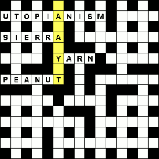
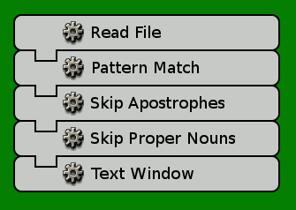
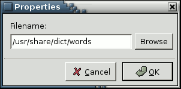
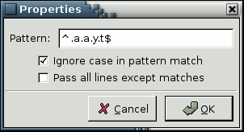
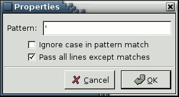
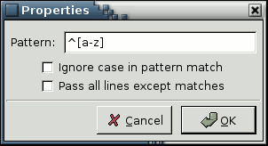
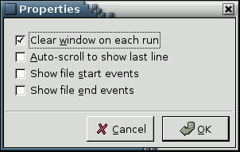

Solving Crossword Puzzles
This machine allows you to find words that fit a particular spot in a crossword puzzle. For example, to solve 3 down in the puzzle below, we need to find a word that matches the pattern:
something A something A something Y something T

The Completed Machine

This machine works by applying a pattern match to the contents of a dictionary file. Unix/Linux systems will typically have a suitable dictionary file (one word per line) at /usr/share/dict/words. If you don't have a one, there are a number available for download from wordlist.sourceforge.net.
The machine is made a little more complex by the need to filter out things that occur in dictionary files, but not in crosswords:
- Proper Nouns - names of people, places and things - identified by an initial capital letter
- Apostrophes - in contractions (e.g.: don't) and possessives (e.g.: earth's)
This extra filtering is achieved with more pattern matching.
Step-by-Step
|  | The data source for this machine is the system dictionary file, accessed via a Read File gear. Just select the name of the file to read. Because the dictionary file contains one word on each line, gears which operate a-line-at-a-time also operate a-word-at-a-time. |
|  | The Pattern Match gear allows you use a Perl Regular Expression (or 'regex') to specify the pattern of letters in the word you want to match. Right-click on the gear and select Help, to read An Introduction to Perl Regular Expressions. The bare basics:
|
|  | A second Pattern Match gear is used to filter out lines containing apostrophes. The 'pattern' is just a single apostrophe. Remember to check the box to 'Pass all lines except matches'. It doesn't really matter whether you leave 'Ignore case' on or off. Since the machine contains multiple Pattern Match gears, you might like to rename this one to: Skip Apostrophes. |
|  | The third Pattern Match gear eliminates proper nouns by matching lines that start with a capital letter. This will only work if you untick 'Ignore case' and untick 'Pass all lines except matches'. You might like to rename this gear to: Skip Proper Nouns. |
|  | The Text Window gear displays the matching words. The default property values are all fine. |
Variations
If you're solving lots of crosswords, it's a little inefficient to filter out the apostrophes and the proper nouns every time you run the machine. A better solution would be to create your own dictionary file that does not include those lines. You can adapt this machine for that purpose by removing the initial Pattern Match gear and replacing the Text Window gear with a Write File gear.